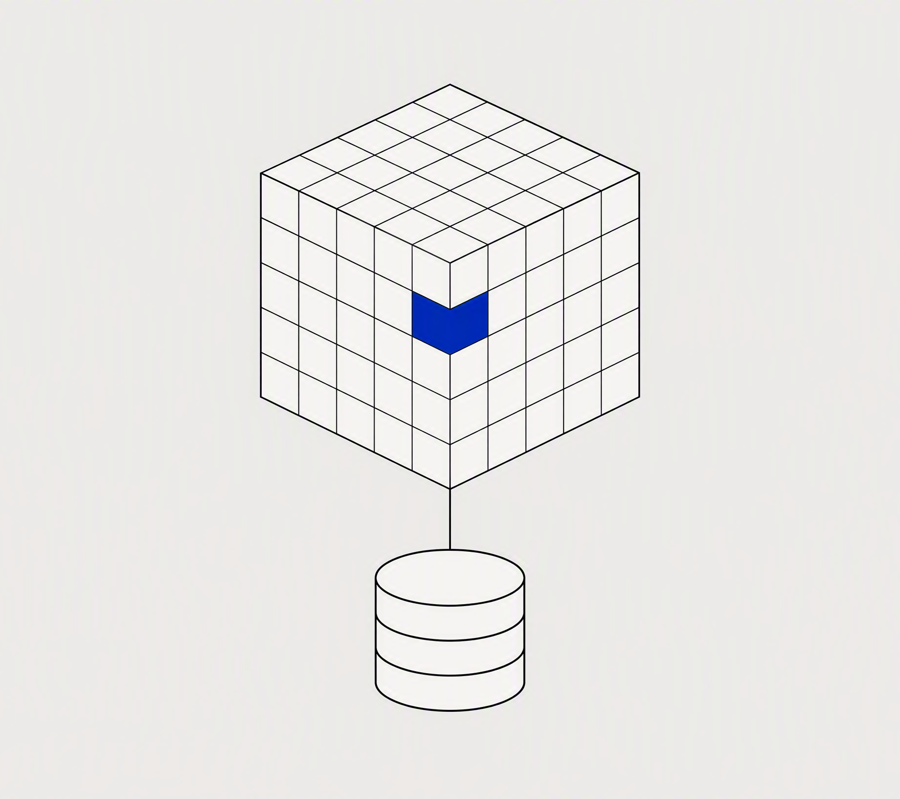
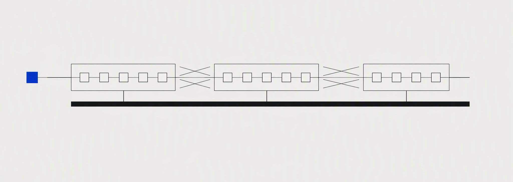

TECH SHARE · 2026
一次架构演进的真实记录：决策、代价与收获
13 页 · 三个阶段 · 三个教训 · 一套治理闭环
ARCHITECTURE EVOLUTION · 2023—2025
01 · ORIGIN
2023 年初的家底，也是当时最优的解：
一个仓库、一个进程、一个数据库
十个人的团队，需求随时在变
两周一次发版，当天可以回滚
几乎没有沟通成本
回头看，问题从来不是"该不该用单体"，而是"什么时候该承认它已经装不下我们了"。

02 · TIMELINE
2023
按业务域梳理模块依赖，用半年画出第一张领域地图，谨慎地拆出 2 个服务。
服务数 1 → 3
2024
核心交易链路完成拆分，服务数从 3 涨到 11，也踩进了分布式事务的坑。
服务数 3 → 11
2025
补齐可观测性与降级预案，拆分节奏放缓，重心从"拆"转向"养"。
服务数 11 → 14
THREE PHASES · ONE DIRECTION
03 · GROWTH
0
5
10
15
1
3
11
14
2024 攻坚期：一年 +8 个服务
2023 初
2023 末
2024 末
2025 末
14 个
当前独立部署的服务（单体时代为 1 个）
+8 个
2024 一年净增（3 → 11），拆分最猛的一年
3 条
业务域划分，所有拆分按域推进
04 · BOUNDARY
order-service/
├── api/ 对外契约：HTTP + 事件，版本化管理
├── domain/ 领域模型：不 import 任何框架
├── infra/ 适配层：数据库、消息队列、缓存
└── main.go 唯一入口：独立部署、独立发版
边界不是画在架构图上的线
是它能不能独立编译、独立部署、独立失败。三条里少任何一条，都只是"换了目录结构的单体"。
我们把这条标准写进代码评审清单，挡住了一半拍脑袋的拆分冲动。
BOUNDARY = INDEPENDENT BUILD · DEPLOY · FAILURE
05 · COMPARE
单体时代 · 2023 初
发布周期
14 天 · 全量发版
故障恢复
4 小时 · 全员排查
回滚方式
整体回滚，当天完成
团队界面
十人共用一个仓库
微服务时代 · 2025
发布周期
2 小时 · 随提随发
故障恢复
15 分钟 · 定位到服务
回滚方式
单服务独立回滚
团队界面
按业务域分组，服务有归属
06 · RESULTS
发布周期
2 小时
原为 14 天 · 全量回归自动化后，随提随发
14 个
独立部署的服务 · 原为 1 个
15 分钟
故障平均恢复时间 · 原为 4 小时
07 · LESSONS
共享库不拆，服务拆分只是换了部署方式的单体，故障照样一损俱损。
链路追踪与告警的建设要跑在服务数量前面，否则每次故障都是全员猜谜。
服务边界最终长成了组织架构的样子——调整团队，比调整代码更有效。
08 · GOVERNANCE
稳定性闭环
观测
指标、日志、链路追踪全覆盖
告警
告警直达服务负责人
降级
预案与降级开关前置
复盘
行动项入库，下季度复查
指标异常即触发
按预案逐级降级
故障止后必复盘
行动项回流指标
09 · EFFICIENCY · 示例数据
本页进度数值为示例数据，用于演示进度组件样式，非真实度量口径。
全量回归自动化
每次提交触发全量回归，是"随提随发"的前提。
92%
主干随时可发
主干保持可发布状态，发布从"事件"变成"动作"。
88%
告警触达负责人
告警按服务归属直达负责人，不再全员广播。
76%
文档与代码同步
契约文档随代码评审一并更新，是最薄弱的一环。
64%
10 · TRAFFIC · 示例数据
3 条业务域
交易域
订单、支付、库存核心链路
52%
履约域
仓储、配送与履约调度
31%
用户域
账户、会员与增长触达
17%
示例数据：仅用于演示环图配方，真实口径以监控平台导出为准。
11 · LANDSCAPE

十四个服务，三条业务域，一套统一的可观测性底座。这张图每季度重画一次——画不出来的依赖，就是该治理的信号。
EVOLVE
12 · CLOSING
三年后我们依然在路上：下一步是单元化与多活。唯一确定的，是"现在"永远比"完美"重要。
THANKS · Q&A